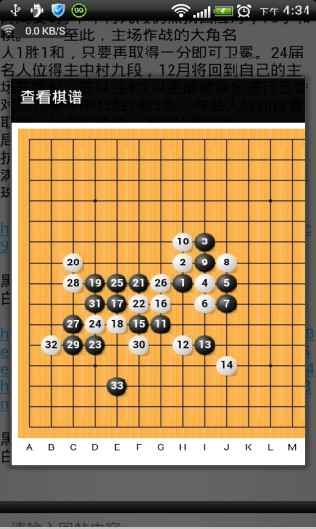
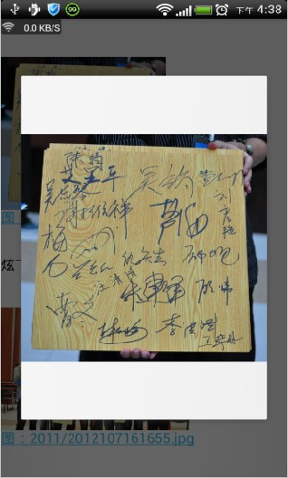

爱五子棋网安卓客户端V1.1（发布于2012年10月22日）
#1 爱五子棋网安卓客户端V1.1（发布于2012年10月22日） 作者：伤情路 发表时间：2012-10-22 16:58:38
爱五子棋网安卓客户端V1.1做出了以下修改：
1、完善评论帖子模块；
2、完善了图片显示模块；
3、添加了查看棋谱的功能；
4、添加了帖子中超链接跳转功能（本站链接可在软件中直接跳转，站外链接提示使用浏览器进行查看）；
下面是几张截图：

棋谱显示

图片显示效果及点击查看大图
软件下载地址为： （下载后解压出apk文件进行安装，支持android2.3及以上系统）
拍摄以下二维码可直接下载：
此外，如果已经在手机上安装了爱五子棋网安卓客户端V1.0版本的，可直接通过软件自带的“检查更新”功能直接进行在线的升级。
欢迎大家下载使用。
大家在使用中，发现有什么错误以及有什么建议的，可以跟帖反馈。
同时亦可以通过以下方式反馈：
爱五子棋网ID：伤情路
［此帖子已被 伤情路 在 2012-10-22 17:00:55 编辑过］
［此帖子已被 伤情路 在 2012-10-22 17:01:23 编辑过］
［ 换你一笑 于 2012-10-22 19:25:30 时花20金币送鲜花一朵］
［ 第五象限 于 2012-10-22 20:04:03 时花20金币送鲜花一朵］
［ 第五象限 于 2012-10-22 20:04:03 时花20金币送鲜花一朵］
［ 第五象限 于 2012-10-22 20:04:03 时花20金币送鲜花一朵］
［ 逆刃 于 2012-10-22 21:13:58 时奖励此帖[金币加 100 威望加1］
［ 黄药师 于 2012-10-22 21:27:27 时花20金币送鲜花一朵］
［ 黄药师 于 2012-10-22 21:27:27 时花20金币送鲜花一朵］
［ 黄药师 于 2012-10-22 21:27:27 时花20金币送鲜花一朵］
［ 黄药师 于 2012-10-22 21:27:27 时花20金币送鲜花一朵］
［ 黄药师 于 2012-10-22 21:27:27 时花20金币送鲜花一朵］
［ 黄药师 于 2012-10-22 21:27:27 时花20金币送鲜花一朵］
［ 黄药师 于 2012-10-22 21:27:27 时花20金币送鲜花一朵］
［ 黄药师 于 2012-10-22 21:27:27 时花20金币送鲜花一朵］
［ 黄药师 于 2012-10-22 21:27:27 时花20金币送鲜花一朵］
［ 雨过云舒 于 2012-10-23 9:27:43 时花20金币送鲜花一朵］
#2 Re:伤情路【==爱五子棋网安卓客户端V1.1（发布于2012年10月22日）==】 作者：换你一笑 发表时间：2012-10-22 19:19:53
超超超给力，谢谢谢了。［ 伤情路 于 2012-10-23 8:29:42 时花20金币送鲜花一朵］
［ 伤情路 于 2012-10-23 8:29:42 时花20金币送鲜花一朵］
［ 伤情路 于 2012-10-23 8:29:42 时花20金币送鲜花一朵］
［ 伤情路 于 2012-10-23 8:29:42 时花20金币送鲜花一朵］
［ 伤情路 于 2012-10-23 8:29:42 时花20金币送鲜花一朵］
#3 Re:爱五子棋网安卓客户端V1.1（发布于2012年10月22日） 作者：黄药师 发表时间：2012-10-22 21:28:21
这个很好啊，也希望各位使用者谈谈感受［ 伤情路 于 2012-10-23 8:29:54 时花20金币送鲜花一朵］
［ 伤情路 于 2012-10-23 8:29:54 时花20金币送鲜花一朵］
［ 伤情路 于 2012-10-23 8:29:54 时花20金币送鲜花一朵］
［ 伤情路 于 2012-10-23 8:29:54 时花20金币送鲜花一朵］
［ 伤情路 于 2012-10-23 8:29:54 时花20金币送鲜花一朵］
#4 Re:黄药师【==Re:爱五子棋网安卓客户端V1.1（发布于2012年10月22日）==】 作者：伤情路 发表时间：2012-10-23 8:30:43
引用：是的，希望大家谈谈自己的感受，软件才能不断改进
原文由 黄药师 发表于 2012-10-22 21:28:21 :
这个很好啊，也希望各位使用者谈谈感受［ 伤情路 于 2012-10-23 8:29:54 时花20金币送鲜花一朵］
［ 伤情路 于 2012-10-23 8:29:54 时花20金币送鲜花一朵］
［ 伤情路 于 2012-10-23 8:29:54 时花20金币送鲜花一朵］
［ 伤情路 于 2012-10-23 8:29:54 时花20金币送鲜花一朵］
［ 伤情路 于 2012-10-23 8:29:54 时花20金币送鲜花一朵］
#5 re:爱五子棋网安卓客户端V1.1（发布于2012年10月22日） 作者：雨过云舒 发表时间：2012-10-23 9:44:09
为什么我用客户端更新下载不下来啊？一直显示请稍候。#6 Re:爱五子棋网安卓客户端V1.1（发布于2012年10月22日） 作者：雨过云舒 发表时间：2012-10-23 10:05:11
终于成功了！！#7 Re:爱五子棋网安卓客户端V1.1（发布于2012年10月22日） 作者：中中 发表时间：2012-10-23 12:39:50
给力！速度去享受阁下的研究成果，哈哈［ 伤情路 于 2012-10-24 8:43:21 时花20金币送鲜花一朵］
［ 伤情路 于 2012-10-24 8:43:21 时花20金币送鲜花一朵］
［ 伤情路 于 2012-10-24 8:43:21 时花20金币送鲜花一朵］
［ 伤情路 于 2012-10-24 8:43:21 时花20金币送鲜花一朵］
［ 伤情路 于 2012-10-24 8:43:21 时花20金币送鲜花一朵］
#8 Re:中中【==Re:爱五子棋网安卓客户端V1.1（发布于2012年10月22日）==】 作者：伤情路 发表时间：2012-10-24 8:44:04
欢迎留下宝贵的使用感受及意见
#9 Re:爱五子棋网安卓客户端V1.1（发布于2012年10月22日） 作者：雨过云舒 发表时间：2012-10-29 13:30:28
用客户端点这个帖子ShowPost.asp?ThreadID=18947的时候显示“服务器无响应”，
进这个帖子ShowPost.asp?ThreadID=18962的时候等半天都没出现图片。
［ 伤情路 于 2012-10-29 16:23:10 时花20金币送鲜花一朵］
［ 伤情路 于 2012-10-29 16:23:10 时花20金币送鲜花一朵］
［ 伤情路 于 2012-10-29 16:23:10 时花20金币送鲜花一朵］
［ 伤情路 于 2012-10-29 16:23:10 时花20金币送鲜花一朵］
［ 伤情路 于 2012-10-29 16:23:10 时花20金币送鲜花一朵］
［ 伤情路 于 2012-10-29 16:23:10 时花20金币送鲜花一朵］
［ 伤情路 于 2012-10-29 16:23:10 时花20金币送鲜花一朵］
［ 伤情路 于 2012-10-29 16:23:10 时花20金币送鲜花一朵］
［ 伤情路 于 2012-10-29 16:23:10 时花20金币送鲜花一朵］
［ 伤情路 于 2012-10-29 16:23:10 时花20金币送鲜花一朵］
#10 Re:爱五子棋网安卓客户端V1.1（发布于2012年10月22日） 作者：雨过云舒 发表时间：2012-10-29 13:35:32
而且在主页用拖拽的方式刷新时，似乎没有真正更新，因为这里和贴吧不一样，活跃的基本上就是首页的帖子，如果本身顶首页的帖子再刷新就没有效果了，而且我回复完这个帖子后刷新也没有刷出这个帖子，重新登录后才看到这个帖子被顶上来。
呃……不知道是不是我手机的问题，我在楼上发的第二条链接明明是“李洪斌 2012全国团体赛第一局自战点评”这个，但是用客户端点进去却变成了“浅析如下好五子棋”……
［此帖子已被 雨过云舒 在 2012-10-29 13:39:49 编辑过］
［ 伤情路 于 2012-10-29 16:23:29 时花20金币送鲜花一朵］
［ 伤情路 于 2012-10-29 16:23:29 时花20金币送鲜花一朵］
［ 伤情路 于 2012-10-29 16:23:29 时花20金币送鲜花一朵］
［ 伤情路 于 2012-10-29 16:23:29 时花20金币送鲜花一朵］
［ 伤情路 于 2012-10-29 16:23:29 时花20金币送鲜花一朵］
［ 伤情路 于 2012-10-29 16:23:29 时花20金币送鲜花一朵］
［ 伤情路 于 2012-10-29 16:23:29 时花20金币送鲜花一朵］
［ 伤情路 于 2012-10-29 16:23:29 时花20金币送鲜花一朵］
［ 伤情路 于 2012-10-29 16:23:29 时花20金币送鲜花一朵］
［ 伤情路 于 2012-10-29 16:23:29 时花20金币送鲜花一朵］
#11 Re:雨过云舒【==Re:爱五子棋网安卓客户端V1.1（发布于2012年10月22日）==】 作者：伤情路 发表时间：2012-10-29 16:19:32
非常感谢雨过云舒！我尽快查出错误并修复！#12 Re:雨过云舒【==Re:爱五子棋网安卓客户端V1.1（发布于2012年10月22日）==】 作者：伤情路 发表时间：2012-10-29 16:30:37
1、关于服务器没有响应的问题。这个是服务器端采集数据出错，导致无法发送数据到客户端。（修复中）
2、关于该帖子图片无法显示的问题。服务器端在发送数据时，没有把相关的图片数据发送过来客户端，因此图片无法显示。（修复中）
3、关于下拉刷新问题。这个是客户端没有及时刷新组件的问题。（已修复）
4、关于链接跳转错误的问题。在链接处理上有BUG。（已修复）
前两个问题已联系网站管理员修复，后两个问题已解决，下个版本更新即可。
再次感谢对本软件提出宝贵的意见，献上鲜花以表谢意